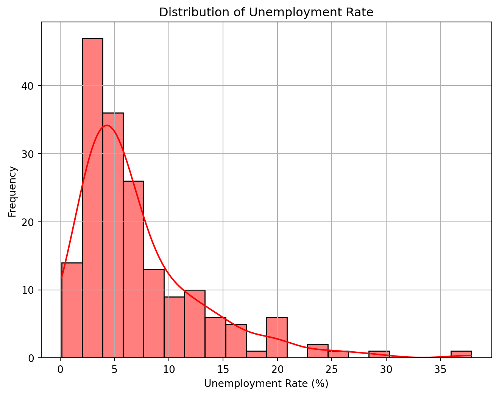
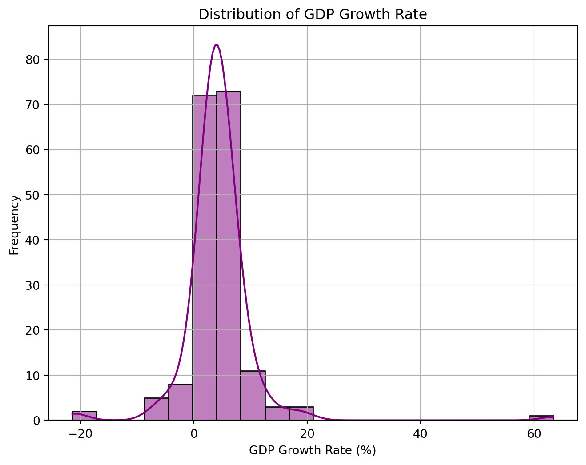
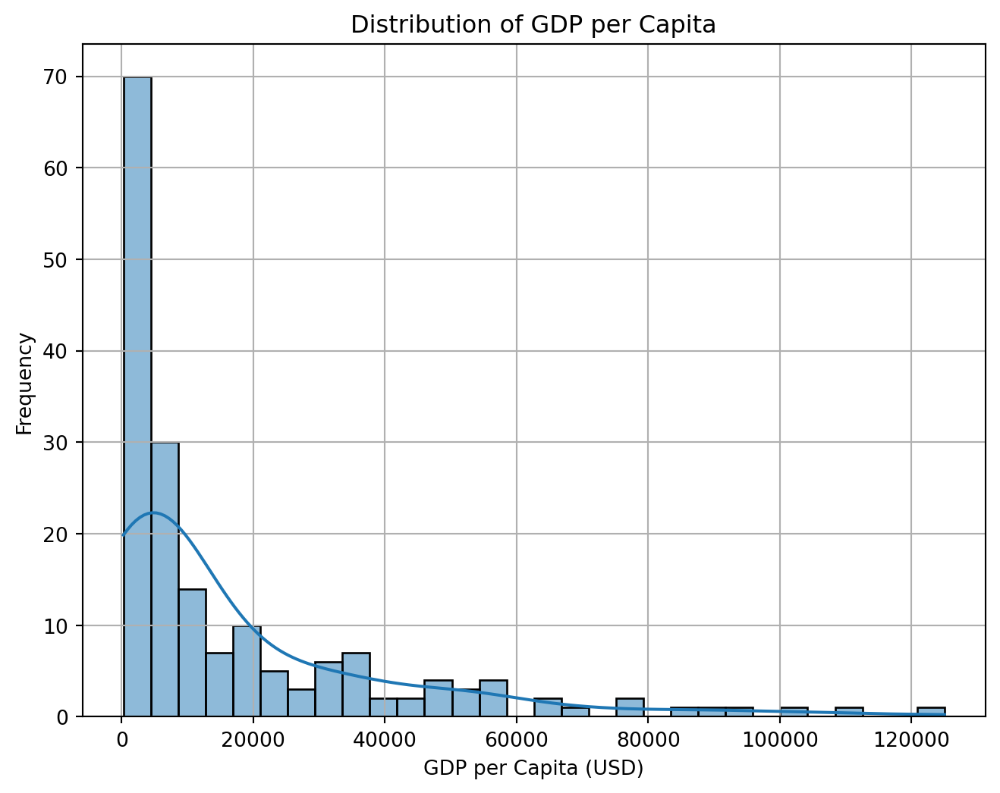
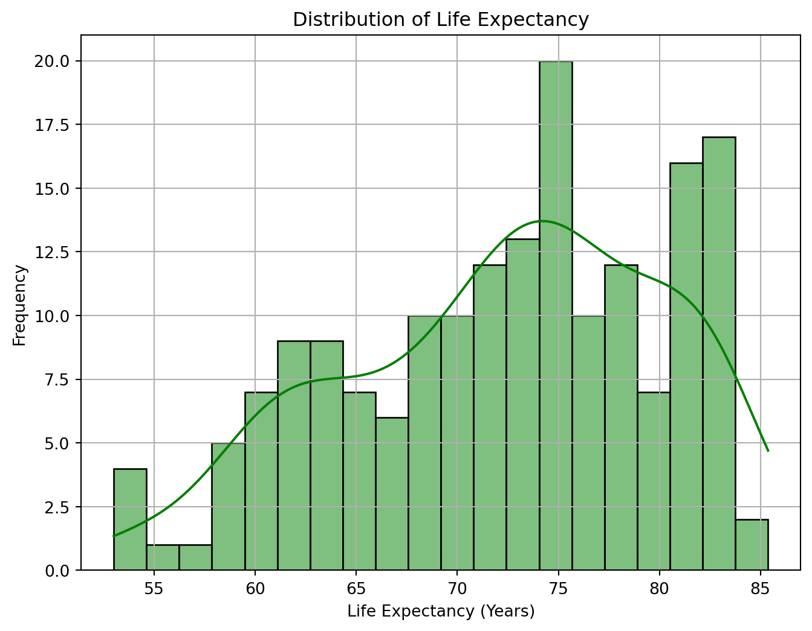
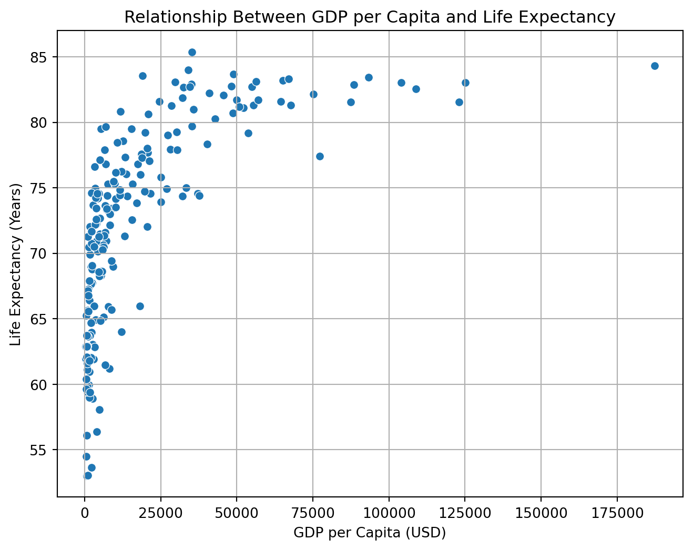
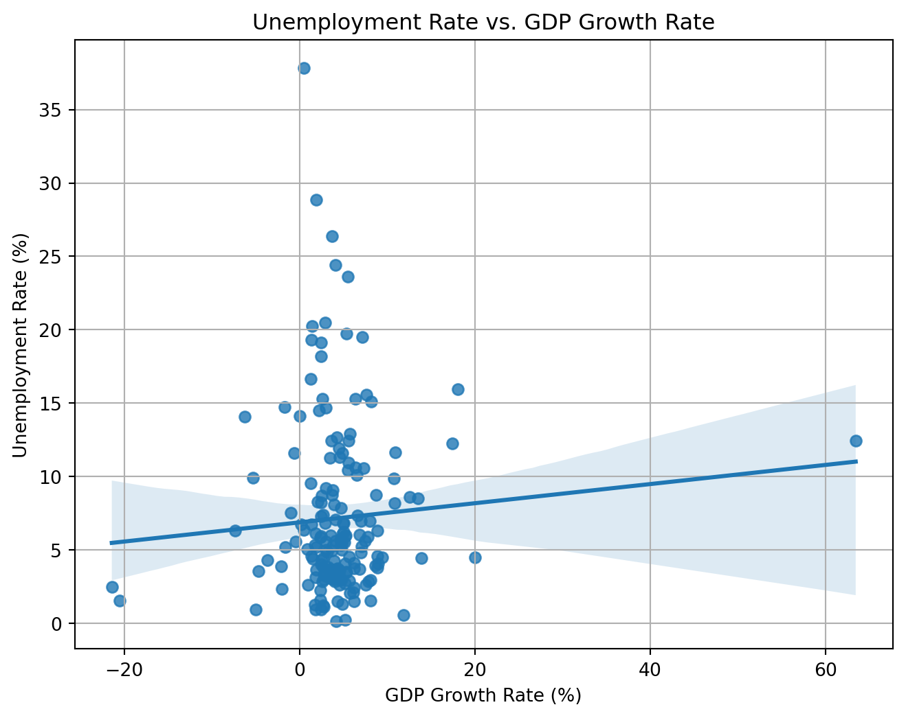

I conducted simple data analysis on the four selected indicators: GDP per Capita,Life Expectancy, Unemployment Rate, and GDP Growth Rate. Below is a table that includes descriptive statistics (mean, median, standard deviation, min, max). The distributions of these four indicators are also included. See Figure 1, Figure 2,Figure 3, Figure 4.
/Users/apple/opt/anaconda3/lib/python3.9/site-packages/IPython/core/formatters.py:345: FutureWarning:
In future versions `DataFrame.to_latex` is expected to utilise the base implementation of `Styler.to_latex` for formatting and rendering. The arguments signature may therefore change. It is recommended instead to use `DataFrame.style.to_latex` which also contains additional functionality.
Count
Mean
Std Dev
Min
25th Percentile
Median
75th Percentile
Max
gdp_per_capita
178.0
17451.757472
23565.086367
259.025031
2298.698327
6861.582423
23763.549395
125006.021815
life_expectancy
178.0
72.213439
7.856838
52.997000
66.099500
73.466000
78.247500
85.377000
unemployment_rate
178.0
7.189169
5.831864
0.130000
3.500750
5.426000
9.000250
37.852000
gdp_growth_rate
178.0
4.374640
6.411042
-21.401951
2.456264
4.112516
5.736861
63.439864
Code
plt.figure(figsize=(8,6))sns.histplot(df['unemployment_rate'], bins=20, kde=True, color='red')plt.xlabel("Unemployment Rate (%)")plt.ylabel("Frequency")plt.title("Distribution of Unemployment Rate")plt.grid(True)plt.show()

Figure 1: Unemplotment Plot
Code
plt.figure(figsize=(8,6))sns.histplot(df['gdp_growth_rate'], bins=20, kde=True, color='purple')plt.xlabel("GDP Growth Rate (%)")plt.ylabel("Frequency")plt.title("Distribution of GDP Growth Rate")plt.grid(True)plt.show()

Figure 2: GDP Growth Rate Plot
Code
plt.figure(figsize=(8,6))sns.histplot(df['gdp_per_capita'], bins=30, kde=True)plt.xlabel("GDP per Capita (USD)")plt.ylabel("Frequency")plt.title("Distribution of GDP per Capita")plt.grid(True)plt.show()

Figure 3: GDP per Capita Plot
Code
plt.figure(figsize=(8,6))sns.histplot(df['life_expectancy'], bins=20, kde=True, color='green')plt.xlabel("Life Expectancy (Years)")plt.ylabel("Frequency")plt.title("Distribution of Life Expectancy")plt.grid(True)plt.show()

Figure 4: Life Expectancy Plot
Further Analysis
Relationship Between GDP per Capita and Life Expectancy
In Figure 5, I applied scatter plot to visualize the relationship and calculated the pearson correlation between these two vairables.
Code
df1 = wdi[['gdp_per_capita', 'life_expectancy']].dropna()# Scatter plotplt.figure(figsize=(8,6))sns.scatterplot(x=df1['gdp_per_capita'], y=df1['life_expectancy'])plt.xlabel("GDP per Capita (USD)")plt.ylabel("Life Expectancy (Years)")plt.title("Relationship Between GDP per Capita and Life Expectancy")plt.grid(True)plt.show()# Pearson correlationcorrelation = np.corrcoef(df1['gdp_per_capita'], df1['life_expectancy'])[0, 1]print(f"Pearson Correlation: {correlation:.4f}")

Figure 5: GDP per Capita and Life Expectancy
Pearson Correlation: 0.6386
Key Findings:
There’s a non-linear relationship between GDP per capita and life expectancy. The scatter plot indicates diminishing returns:
At lower income levels, life expectancy increases sharply with GDP per capita.
At higher income levels, the relationship flattens, meaning additional GDP per capita has a smaller impact on life expectancy.
This suggests that basic economic growth significantly improves life expectancy in low-income countries, likely due to better healthcare, sanitation, and living standards. However, beyond a certain level, other factors like lifestyle, healthcare quality, and aging play a bigger role.
The Pearson correlation coefficient of 0.6386 suggests a moderate to strong positive relationship between GDP per capita and life expectancy.
This implies that, in general, countries with higher GDP per capita tend to have longer life expectancies.
Unemployment Rate vs. GDP Growth Rate
Code
df2 = wdi[['unemployment_rate', 'gdp_growth_rate']].dropna()plt.figure(figsize=(8,6))sns.regplot(x=df2['gdp_growth_rate'], y=df2['unemployment_rate'])plt.xlabel("GDP Growth Rate (%)")plt.ylabel("Unemployment Rate (%)")plt.title("Unemployment Rate vs. GDP Growth Rate")plt.grid(True)plt.show()X = df2['gdp_growth_rate'].values.reshape(-1,1)y = df2['unemployment_rate'].values.reshape(-1,1)# Perform linear regressionA = np.hstack([np.ones((X.shape[0], 1)), X]) # Add intercept termcoefficients = np.linalg.lstsq(A, y, rcond=None)[0] # Solve least squaresintercept, slope = coefficients.flatten()print(f"Linear Regression Equation: Unemployment Rate = {intercept:.4f} + {slope:.4f} * GDP Growth Rate")

Figure 6: Unemployment Rate vs. GDP Growth Rate
Linear Regression Equation: Unemployment Rate = 6.8714 + 0.0653 * GDP Growth Rate
The data is obtained from the World Development Indicators by the World Bank (Bank 2024).
Key Findings
The regression equation is \[\text{Unemployment Rate} = 6.8714 + 0.0653 \times \text{GDP Growth Rate}\]
The intercept (6.8714) suggests that when GDP Growth Rate is 0%, the expected Unemployment Rate is around 6.87%.
The slope (0.0653) indicates that for each 1% increase in GDP Growth Rate, the Unemployment Rate increases by 0.0653%.
The regression line shows a slight upward trend, suggesting a very weak positive relationship between GDP Growth and Unemployment. Normally, Okun’s Law states that GDP growth should reduce unemployment, but this plot does not show a strong negative correlation.
Many countries with similar GDP Growth Rates have widely different Unemployment Rates. Some outliers suggest that other factors influence unemployment more than GDP growth alone.
The weak relationship could be due to structural unemployment, where economic growth does not directly translate into job creation. (Öner 2024)
Labor market policies, automation, and demographic trends might be stronger drivers of unemployment than short-term GDP fluctuations. (Hayes 2025)
A right-skewed distribution, meaning a few wealthy countries significantly raise the average. Extreme economic disparity between countries.
Life Expectancy
The distribution is bimodal, with peaks around 60-65 years and 75-80 years.
Unemployment Rate
Right-skewed distribution. The peak occurs around 4-6%, suggesting that many economies operate at these levels. Some countries struggle with much higher unemployment rates.
GDP Growth Rate
Approximately normal distribution, centered around 0-5% growth. Some extreme cases where GDP growth is highly negative (e.g., recessions) or very high (above 20%).
GDP per Capita vs. Life Expectancy
Economic development is strongly linked to life expectancy, but the effect is more pronounced at lower GDP levels.
Unemployment Rate vs. GDP Growth Rate
No strong evidence that higher GDP growth reduces unemployment significantly. Other economic and policy factors likely play a larger role.